공조냉동기계산업기사 (2002-03-10 기출문제)
1과목: 공기조화
1. 건구온도 30℃,절대습도 0.02㎏/㎏'인 외부공기 40%와 건구온도 25℃,절대습도 0.01㎏/㎏'인 실내공기 60%를 혼합하였을 때의 건구온도 및 절대습도는?
- 28℃, 0.⑤4㎏/㎏'
- 27℃, 0.⑤4㎏/㎏'
- 28℃, 0.014㎏/㎏'
- 27℃, 0.014㎏/㎏'
(정답률: 39%)

2. 증기 난방 방식의 특징이 아닌 것은?
- 방열면 온도가 높아 온열 감각이 저하한다.
- 한랭지에서는 동결의 문제가 생기기 쉽다.
- 실내의 상하 간의 온도 차가 크다.
- 배관의 시공성 및 제어성이 용이하다.
(정답률: 45%)
3. 다음 그림에 표시한 사무실의 손실 열량은 얼마인가? (단,설계조건은 실내온도 20℃,옆방온도 20℃,층위온도 20℃,옥외온도 0℃, 바닥밑온도 6℃,복도온도 10℃, 외벽 k = 3.2,내벽 K = 1.6,바닥 K = 0.7,창 K=2.2, 문 K = 2.2,천정 K = 1.4㎉/m2h℃으로 하고 환기회수는 1회/h로 한다.)
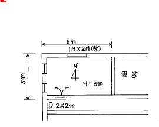
- 3,176㎉/h
- 3,872㎉/h
- 4,193㎉/h
- 2,937㎉/h
(정답률: 47%)
4. 벽의 두께 ℓ = 100[㎜]인 물질의 양표면 온도가 각각 t1 =320℃, t2 = 40℃일 때 이벽의 단위시간, 단위면적당 방열량과 벽의 중심에서의 온도는? (단, 벽의 열전도율은 λ = 0.⑤[kcal/m h℃]이다.)
- 121 kcal/m2h , 180℃
- 121 kcal/m2h , 165℃
- 140 kcal/m2h , 165℃
- 140 kcal/m2h , 180℃
(정답률: 32%)
5. 벽체의 두께 15㎝,열관류율 4㎉/m2h℃,실내온도 20℃,외기온도 2℃, 벽의 면적 10m2일때 벽면의 열손실량은 몇㎉/h인가?
- 720
- 864
- 960
- 1152
(정답률: 40%)
6. 덕트의 계획에 있어서 주의해야 할 사항이 아닌 것은?
- 덕트 단면의 아스펙트 비(ASPACT RATIO)는 4 : 1 이하로 한다.
- 덕트의 각 취출구에의 풍량조정을 지나치게 댐퍼에 의존해서는 안된다.
- 덕트의 급격한 굽힘은 제작상의 허락하는 범위내에서 상관없다.
- 덕트의 급격한 확대와 축소는 피한다.
(정답률: 66%)
7. 다음 그림은 냉방시의 공기조화 과정을 나타낸다. 그림과 같은 조건일 경우 냉각코일의 바이패스 팩터 (Bypass Factor)는 얼마인가? (단, ①실내공기의 상태점, ②외기의 상태점, ③혼합공기의 상태점 ④취출공기의 상태점, ⑤코일의 장치노점온도)
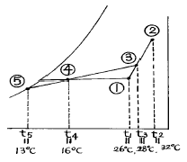
- 0.15
- 0.20
- 0.25
- 0.30
(정답률: 56%)
8. 그림은 공기조화기 내부에서의 공기의 변화를 나타낸 것이다. 이 중에서 냉각 코일에서 나타나는 상태변화는 공기선도상 어느 점을 나타내는가?
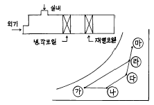
- ㉮ - ㉯
- ㉯ - ㉰
- ㉱ - ㉮
- ㉱ - ㉲
(정답률: 68%)
9. 병원이나 식품공장 등 미생물 오염을 방지하기 위한 공기조화 설비는?
- 바이오 클린룸
- 제습실
- 항온 항습실
- V.A.V 시스템
(정답률: 79%)
10. 구조체를 통한 손실 열량을 구하는 공식에서 Rt는 무엇을 나타내는가? 【공식 : Ht=1/Rt× A(tR-t0)[㎉/HR]】(단, Ht:손실열량, A:면적, t:온도)
- 열 복사율
- 열 전도 계수
- 열 통과 저항
- 열 관류율
(정답률: 44%)
11. 가습방법 중 가습효율이 가장 높은 것은?
- 에어워셔에 의한 단열 가습
- 온수 분수 가습
- 증기 분수 가습
- 초음파 가습
(정답률: 72%)
12. 다음 설명 중 옳지 않은 것은?
- 주철 보일러는 능력이 부족할 때는 섹션을 늘릴 수없다.
- 주철 보일러는 압력 1 atg 이하의 저압 증기용이다.
- 진공식 보일러는 온수 전용이다.
- 노통 연관 보일러는 고압증기를 얻을 수 있다.
(정답률: 51%)
13. 보일러의 안전 수면을 유지시키는 역할을 하는 배관 설비는 어떤 것인가?
- 하트포드 배관
- 리버스리턴 배관
- 신축이음
- 리턴 코크
(정답률: 70%)
14. 다음 중 벽 설치형 취출구가 아닌 것은?
- 아네모스텟형 취출구
- 유니버셜형 취출구
- 노즐형 취출구
- 고정베인 취출구
(정답률: 53%)
15. 건구온도 T ℃인 습공기의 엔탈피 계산식에 있어서 틀린것은?
- 건조공기의 정압비열은 0.24 kcal/kg· ℃이다
- 수증기의 정압비열은 0.441 kcal/kg· ℃이다
- 597 kcal/kg은 0 ℃인 물을 0 ℃의 포화증기로 증발시키는 데 필요한 잠열이다
- 0.441· T는 잠열량을 계산하는 식이다
(정답률: 49%)
16. 다음 중 복사난방의 장점이 아닌 것은?
- 쾌적성이 좋다
- 방열기나 배관이 작다
- 실내의 상하 온도차이가 작다
- 패널열용량이 크기 때문에 장치의 운전 정지 후에도 효과가 유지된다
(정답률: 54%)
17. 공조기를 설치한 바닥 면적은 좁고 층고가 높은 경우에 적합한 공조기(AHU)의 형식은?
- 수직형
- 수평형
- 복합형
- 멀티존형
(정답률: 80%)
18. 다음 중 송풍기의 풍량제어 방법이 아닌 것은?
- 토출댐퍼 제어
- 흡입댐퍼 제어
- 흡입베인 제어
- 정압 제어
(정답률: 56%)
19. 온풍난방을 하고 있는 사무실 내의 환경에 대해 다음의 a-d의 각 항목에 대해 설비 설계상 가장 적당하다고 생각되는 값을 개개의 수치 중에서 골라 조합한 것 중 가장 적합한 것은?
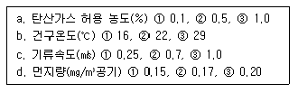
- a---②, b---①, c---③, d---①
- a---③, b---③, c---①, d---②
- a---①, b---②, c---①, d---①
- a---②, b---②, c---②, d---③
(정답률: 51%)
20. 다음 중 덕트내의 정압을 측정하고자 할 때 적당한 기기는?
- 벤츄리관
- 사이폰관
- 서모스탯
- 마노미터
(정답률: 55%)
2과목: 냉동공학
21. 2중 효용 흡수식 냉동기에 대한 설명중 옳지 않은 것은?
- 단중 효용 흡수식 냉동기에 비해 훨씬 증기소비량이 적다.
- 2개의 재생기를 갖고 있다.
- 2개의 증발기를 갖고 있다.
- 발생기의 열원으로 증기 대신 가스연소를 사용하기도 한다.
(정답률: 52%)
22. 표준 대기압 하에서 100℃의 물 1㎏을 전부 증기로 바꿀때 체적은 0.001m3에서 1673배로 팽창했다. 이 때 내부 에너지의 증가는 몇 ㎉인가?
- 230
- 498
- 525
- 580
(정답률: 41%)
23. 냉동장치에서 일반적으로 가스퍼저(Gas purger)를 설치할 경우 불응축가스 인출관의 위치로 적당한 곳은?
- 수액기와 팽창밸브의 액관
- 응축기와 수액기의 액관
- 응축기와 수액기의 균압관
- 응축기 직전의 토출관
(정답률: 55%)
24. 가스의 압축에 관한 설명 중 틀린 것은 ?
- 압축비가 클수록 체적효율은 저하 한다.
- 압축비가 일정하면 간극 용적비가 클수록 효율은 적다.
- 동일 가스 등은 흡입온도에서는 압축비가 클수록 토출온도가 높다.
- 등온압축 동력은 단열압축 동력보다 크다.
(정답률: 41%)
25. 분자량이 44인 기체의 정압비열Cp = 0.1943㎉/㎏?k이다. 이 기체의 정적비열Cv는 몇 ㎉/㎏?K인가? (단, 일반가스 정수 R는 848㎏?m/k㏖?k로 한다.)
- 0.0272
- 0.1492
- 0.4567
- 0.3311
(정답률: 33%)
26. 암모니아 냉동장치에서 토출압력이 올라가지 않는 이유는 무엇인가?
- 습증기를 흡입했기 때문이다.
- 냉매중에 공기가 섞여있기 때문이다.
- 응축기와 압축기를 순환하는 냉각수가 부족했기 때문이다.
- 장치내에 냉매가 과잉충진 되었기 때문이다.
(정답률: 32%)
27. 냉동장치의 운전중에 리키드 백(liquid back)현상이 일어나고 있는 원인 중 틀린 것은?
- 냉동부하의 급격한 변동이 있을 때
- 팽창밸브의 개도가 과소할 때
- 액분리기,열교환기의 기능 불량일 때
- 증발기,냉각관에 과대한 서리가 있을 때
(정답률: 47%)
28. 아래의 표에 나타난 재료로 구성된 냉장고의 단열벽이 있다. 외기온도가 30℃, 냉장실온도가 -20℃,단열벽의 내면적이 20m2이라면, 그 내면적을 통하여 외부에서 냉장실내로 침입하는 열량 Q(㎉/h)은?
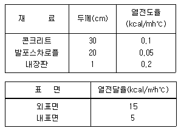
- 58.9(㎉/h)
- 136.7(㎉/h)
- 500.8(㎉/h)
- 800.9(㎉/h)
(정답률: 41%)
29. 응축기에 대한 설명 중 틀린 것은?
- 응축기는 압축기에서 토출한 고온가스를 냉각하여 냉매액으로 만든다.
- 응축기에서 냉각수에 의하여 냉각되어 압력이 상승한다.
- 응축기에는 불응축가스가 잔류하는 경우가 있다.
- 응축기의 냉각관의 수측에 스케일이 부착되는 경우가 있다.
(정답률: 53%)
30. 할라이드 토치로 누설검사가 불가능한 냉매는?
- R - 717
- R - 504
- R - 22
- R - 114
(정답률: 53%)
31. 다음 설명 중 맞는 것은 어느 것인가?
- 증기 압축식 냉동사이클에서 팽창밸브를 통과한 냉매는 모두 저온저압의 포화액이 된다.
- 압축기 실린더의 클리어런스 체적이 크면 체적효율이 작게 되고 토출가스 온도도 저하한다.
- 흡입압력이 일정한 경우 압축기 입구에서 냉매증기의 과열도가 작을수록 냉매순환량은 작게 된다.
- 공기열원 히트펌프를 난방운전하면 외기온도가 상승함에 따라 난방능력도 증대하고 성적계수도 커진다.
(정답률: 36%)
32. 20㎏/cm2abs,200℃인 11g의 물이 증발하는 동안에 비체적이 0.00123m3/㎏에서 0.⑤82m3/㎏으로 증가하였다. 이 때 1㎏의 물로 구성되는 정지계의 내부에너지 변화는? (단, 증발전후 엔탈피는 각각 250㎉/㎏, 650㎉/㎏ 이다.)
- 273
- 253
- 353
- 373
(정답률: 26%)
33. 터보 압축기에서 속도에너지를 압력으로 변화시키는 장치는?
- 임펠러
- 베인
- 증속기어
- 디퓨져
(정답률: 48%)
34. 다음 중 1보다 크지 않는 것은?
- 폴리트로픽 지수
- 성적 계수
- 건조도
- 비열비
(정답률: 33%)
35. 냉매가 윤활유에 용해되는 순위가 큰 것부터 올바르게 나타낸 것은?
- R12 - R502 - R13 - R22(저온)
- R12 - R14 - R502 - R22(저온)
- R502 - R21 - R717 - R114(저온)
- R502 - R12 - R717 - R114(저온)
(정답률: 25%)
36. 감열과 잠열에 대한 다음 설명 중 옳은 것은?
- 0℃의 얼음을 100℃의 물로 만들 때 감열은 잠열보다 크다.
- 감열 또는 현열은 일반 온도계로는 측정할 수 없는 열이다.
- 증발기는 냉매의 감열을 이용하는 곳이다.
- 온도계로 측정할 수 있는 열에는 융해열,응고열,증발열 등이 있다.
(정답률: 42%)
37. 커넥팅 로드의 대단부와 연결되어 있는 것은?
- 피스톤 핀
- 크랭크 핀
- 축봉장치
- 크랭크 케이스
(정답률: 39%)
38. 프레온 냉동장치에서 유분리기를 설치하는 경우가 아닌 것은?
- 만액식 증발기를 사용하는 장치의 경우
- 증발온도가 높은 냉동장치의 경우
- 토출가스 배관이 긴 경우
- 토출가스에 다량의 오일이 섞여나가는 경우
(정답률: 47%)
39. 가역냉동기의 능력이 100냉동톤으로 -5℃와 +15℃ 사이에서 작동하고 있다.이 냉동기가 10℃의 물에서 0℃의 얼음을 24시간에 얼마나 만들수 있는가?
- 3889㎏
- 3689㎏
- 68.53ton
- 88.54ton
(정답률: 26%)
40. 온도식 팽창밸브(TEV)는 다음과 같은 압력에 의해 작동된다. 맞지 않는 것은?
- 증발기 압력
- 스프링의 압력
- 감온통의 압력
- 응축 압력
(정답률: 49%)
3과목: 배관일반
41. 부식을 방지하기 위해 페인트을 하는데 다음중 연단에 아마유를 배합한 것으로 녹스는 것을 방지하기 위하여 사용되며 도료의 막이 굳어서 풍화에 대해 강하고 다른 착색 도료의 초벽으로 우수한 도료는?
- 알루미늄 도료
- 광명단 도료
- 합성수지 도료
- 산화철 도료
(정답률: 63%)
42. 가스켓의 선정시 고려해야 할 사항으로 옳지 않은 것은?
- 경도
- 시일면의 형상
- 유체의 압력
- 재료의 부식성
(정답률: 35%)
43. 급탕배관 설계시 배관 관경 결정을 위한 유속은 어느 범위 이내에 하는 것이 바람직한가?
- 0.5 m/s
- 1.5 m/s
- 3 m/s
- 6 m/s
(정답률: 57%)
44. 다음 중 증기난방 배관의 고정 지지물의 고정방법을 잘못 설명한 것은?
- 신축이음이 있을 때에는 배관의 양끝을 고정한다.
- 신축이음이 없을 때는 배관의 중앙부를 고정한다.
- 주관에 분기관이 접속되었을 때에는 그 분기점을 고정한다.
- 고정 지지물의 설치 위치는 시공상 그리 큰 문제가 되지 않는다.
(정답률: 61%)
45. 대구경 강관의 보수 및 점검을 위해 자주 분해,결합,진동을 흡수하며 기기 설치부에 사용되는 연결방법은?
- 나사접합
- 플랜지접합
- 용접접합
- 슬리이브접합
(정답률: 60%)
46. 경질 염화비닐관의 특성으로 옳지 않은 것은?
- 급탕관,증기관으로 사용하는 것은 적합하지 않다.
- 다른 배관에 비해 관내 마찰손실이 커서 불리하다.
- 온도의 상승에 따라 인장강도는 떨어진다.
- 열팽창율이 커서 철의 7 ∼ 8배가 된다.
(정답률: 58%)
47. 냉매배관 중 토출관이란?
- 압축기에서 응축기까지의 배관
- 응축기에서 팽창밸브까지의 배관
- 증발기에서 압축기까지의 배관
- 응축기에서 증발기까지의 배관
(정답률: 45%)
48. 가스유량을 2m3/h에서 6m3/h로 하면 압력손실은 몇 배가 되는가?
- 3배
- 6배
- 9배
- 12배
(정답률: 39%)
49. 프레온22의 냉매배관 고압측 최소 누설 시험압력은 얼마인가?
- 5 ㎏/cm2
- 10 ㎏/cm2
- 16 ㎏/cm2
- 25 ㎏/cm2
(정답률: 32%)
50. 증기와 드레인을 분리하고 공기와 드레인을 함께 처리하는 트랩은?
- 열동식 트랩
- 플로우트 트랩
- 버킷트 트랩
- 충격식 트랩
(정답률: 45%)
51. 다음은 압력탱크 급수방식의 특징을 설명 것인데 잘못 설명한 것은?
- 많은 저수량을 확보할수 있으므로 단수시 계속 물을 공급할수 있다.
- 조작상 최고 최저 압력차가 크며 급수압이 일정치 않다.
- 저수량이 적으므로 정전이나 펌프고장시 급수가 중단된다.
- 탱크는 압력에 견디도록 제작되어 있어 제작비가 많이 든다.
(정답률: 41%)
52. 급탕주관의 길이가 40m,반탕주관의 길이가 30m일 때 순환펌프의 양정은 약 몇 m인가?
- 1.5m
- 1.2m
- 0.9m
- 0.5m
(정답률: 26%)
53. 배관 설비시 스트레이너(strainer)의 설치위치로서 적절하지 못한 곳은?
- 트랩의 앞
- 감압밸브의 앞
- 온도조절 밸브의 뒤
- 펌프의 입구측
(정답률: 49%)
54. 신축 곡관이라고도 하며, 강관 또는 동관 등을 구부려 그구부림 형상을 이용하여 배관의 신축을 흡수하는 신축이 음은?
- 슬리이브형 신축이음
- 벨로즈형 신축이음
- 루우프형 신축이음
- 볼죠인트
(정답률: 48%)
55. 배관계의 도중에 설치하여 유체속에 혼입된 토사나 이물질 등을 제거하는 배관 부품은?
- 팽창이음(Joint)
- 밸브(Valve)
- 스트레이너(Strainer)
- 저수조(貯水槽)
(정답률: 70%)
56. 증기 난방 설비의 수평배관에서 관경을 바꿀 때 사용하는 이음쇠는?
- 편심 리듀셔
- 동심 리듀셔
- 붓싱
- 소켓
(정답률: 67%)
57. 급수배관에서 수격작용의 방지를 위해 설치하는 것은?
- 공기실
- 신축이음
- 스톱밸브
- 첵밸브
(정답률: 47%)
58. 배관내면의 부식원인과 관계 없는 것은?
- 유체의 온도
- 유체의 속도
- 유체의 PH
- 용존(溶存)수소
(정답률: 47%)
59. 급수용 펌프의 양정을 결정할 때, 그 효과를 무시할 수있는 것은?
- 실양정
- 관로의 흡입손실 수두
- 관로의 토출손실 수두
- 압력 수두차
(정답률: 34%)
60. 하트포드 접속법(hartford connection)은 증기 난방 배관 중 어디에 배관하는가?
- 관말 트랩 장치에 배관
- 증기 주관에 배관
- 증기관과 환수관 사이에 배관
- 방열기 주위에 배관
(정답률: 55%)
4과목: 전기제어공학
61. 블럭선도에서 신호의 흐름을 반대로 할 때, ⓐ에 해당하는 것은?
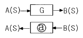
- G
- -G
- 1/G
- jωG
(정답률: 44%)
62. 계전기 접점의 아크를 소거할 목적으로 사용되는 소자는?
- 바리스터(Varistor)
- 바렉터다이오드
- 터널다이오드
- 서미스터
(정답률: 55%)
63. 피드백제어로서 서보기구에 해당하는 것은?
- 석유화학공장
- 발전기 정전압장치
- 선박의 자동조타
- 전철표 자동판매기
(정답률: 58%)
64. 디지털 제어시스템의 폐루프 전달함수의 위상을 지연시키며, 시스템의 안정도에 영향을 주고, 이산신호가 연속신호로 바뀌는 출력변환장치는?
- 전압-주파수변환기
- PＩD 제어기
- 제로-오더홀딩장치(Z.O.H)
- 계측용증폭기
(정답률: 30%)
65. 주파수변환기를 사용하여 회전자의 슬립주파수와 같은 주파수의 전압을 발생시킨 것을 슬립링을 통해 회전자 권선에 공급하여 속도를 바꾸는 제어방법은?
- 주파수변환법
- 2차저항법
- 2차여자법
- 가변전압가변주파수방식
(정답률: 26%)
66. 정전용량이 같은 두 개의 콘덴서를 직렬로 연결했을 때 합성용량은 병렬 연결했을 때의 몇 배인가?
- 1/4
- 1/2
- 2
- 4
(정답률: 32%)
67. PＩ제어동작은 프로세스 제어계의 정상 특성 개선에 흔히 사용되는데, 이것에 대응하는 보상요소는?
- 지상보상요소
- 진상보상요소
- 동상보상요소
- 지상 및 진상보상요소
(정답률: 62%)
68. 유도전동기의 1차 접속을 △에서 Y로 바꾸면 기동시의 1차전류는 어떻게 변화하는가?
- 1/3로 감소
- 1/√3로 감소
- √3 배로 증가
- 3배로 증가
(정답률: 44%)
69. 동기화 제어변압기로 사용되는 것은?
- 싱크로변압기
- 앰플리다인
- 차동변압기
- 리졸버
(정답률: 49%)
70. 그림은 VVVF를 이용한 속도 제어회로의 일부이다. 회로의 설명 중 옳은 것은?
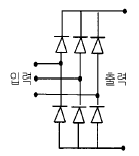
- 교류를 직류로 변환하는 정류회로이다.
- 교류의 PWM 제어회로이다.
- 교류의 주파수를 변환하는 회로이다.
- 교류의 전압으로 변환하는 인버터회로이다.
(정답률: 51%)
71. 전압 1.5V, 내부저항 0.2Ω인 전지 5개를 직렬로 접속하면 전전압은 몇 V 가 되는가?
- 0.3
- 1.5
- 3.0
- 7.5
(정답률: 39%)
72. 그림은 일반적인 반파정류회로이다. 변압기 2차 전압의 실효값을 E[V]라 할 때 직류전류의 평균값은? (단, 변류기의 전압강하는 무시한다.)
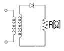
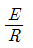
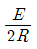
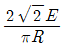
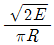
(정답률: 43%)
73. R-L직렬회로에 100V의 교류전압을 가했을 때 저항에 걸리는 전압이 80V이었다면 인덕턴스에 유기되는 전압은 몇 V인가?
- 20
- 40
- 60
- 80
(정답률: 40%)
74. 그림과 같은 유접점회로를 논리식으로 표현하면?
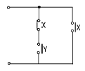
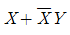
- XY
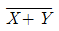
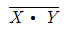
(정답률: 53%)
75. 그림과 같은 브리지회로에서 검류기 뀁에 전류가 흐르지 않는다면 저항 r5 의 값은 몇 Ω 인가? (단, 단위는 모두 Ω이다.)
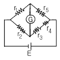
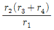
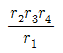
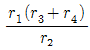
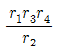
(정답률: 45%)
76. 컴퓨터실의 온도를 항상 18℃로 유지하기 위하여 자동냉난방기를 설치하였다. 이 자동 냉난방기의 제어는?
- 정치제어
- 추종제어
- 비율제어
- 서보제어
(정답률: 57%)
77. 100V의 기전력으로 100Ｊ의 일을 할 때 전기량은 몇 C인가?
- 0.1
- 1
- 10
- 100
(정답률: 58%)
78. 농형유도전동기의 기동법이 아닌 것은?
- 리액터기동법
- Y-Y기동법
- 전전압기동법
- 기동보상기법
(정답률: 48%)
79. 그림과 같은 계전기 회로를 점선안(C,D,E)에 논리소자를 이용하여 변환시킬 때 사용되지 않는 소자는?
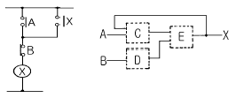
- AND
- OR
- NOT
- NOR
(정답률: 47%)
80. 서보기구의 조작부에 사용되지 않는 전동기는?
- 교류 서보전동기
- 스테핑모터
- 유압전동기
- 동기전동기
(정답률: 36%)
외부공기의 수분량 = 0.02 × 40/100 = 0.008㎏/㎏
실내공기의 수분량 = 0.01 × 60/100 = 0.006㎏/㎏
총 수분량 = 0.008 + 0.006 = 0.014㎏/㎏
따라서 혼합된 공기의 절대습도는 0.014㎏/㎏이 된다.
건구온도는 외부공기와 실내공기의 온도를 가중평균한 값으로 구할 수 있다.
건구온도 = (30 × 40/100) + (25 × 60/100) = 27℃
따라서 정답은 "27℃, 0.014㎏/㎏'"이 된다.